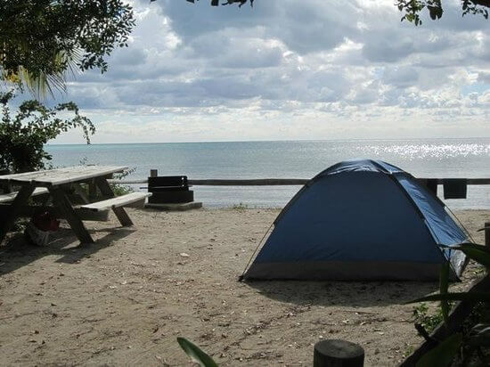
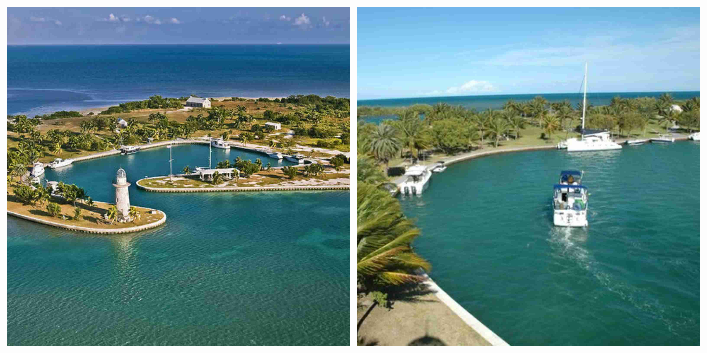
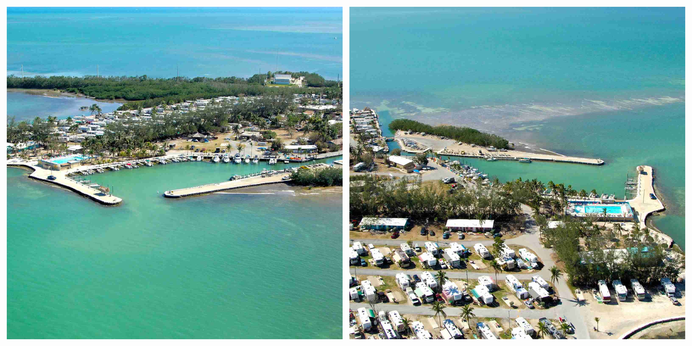

5 Best places for tent camping at the Florida Keys
The Florida Keys is a wonderful place to camp. You will not believe how fun number 5 is on the list.
The Seven Mile Bridge
This is the centerpiece of the Florida keys, and many people from all over the world just to travel across it. The Seven Mile Bridge is one of the longest in the world and runs throughout the entire island. Fun fact about the Seven Mile Bridge is that it is not actually 7 miles long, it is actually 6.79 miles in length.
Long Key Camping
- Camping
- Fishing
- Geo-Seeking
- Picnicking
- Snorkeling
- Star Gazing
- Swimming
- Wildlife Viewing
- Walking and Running
Bahia Honda State Park
- Camping
- Lodging
- Kayaking
- Bicycling
- Fishing
- Gift shop
- Swimming
Boyd`s Key West Campground
- Beautiful Landscaping
- Bike & Walk Paths
- Boat Ramp
- Coin-op Laundry
- Fish Cleaning Station
- Large Swimming Pool
- Boating
- Boating Nearby
- Fishing Area
- Fishing Pier
- General Store
- Mail Center
- Pets Welcome
- Picnic Pavilion
- Pool Table
- Restrooms/Showers
- Security 24hrs
- Wi-Fi
- Game Room
- Marina
Jolly Roger RV Resort
- Swimming Pool
- Gulf Swimming & Snorkeling
- Boat Docks & Harbor Sites
- Clean Restrooms & Laundry
- Covered Group Pavilion
- Bark Park
- pull-through Sites
- Pets Allowed
- Electric 50 AMP Hookup
- Tent Camping
- Wi-Fi
- ATT
- Sprint
- Verizon
Leo's Campground
- Free parking
- Pets Allowed (Dog/Pet Friendly)
- Free High Speed Internet (Wi-Fi)
- Concierge
- Self-serve laundry
- Public Wi-Fi
- Children Activities (Kid/Family Friendly)
BOCA CHITA KEY CAMPGROUND
- When camping here, bring your own source of water as there is no drinking water or electricity available
- There are no sinks or showers available
- Docking at this campground overnight will cost $25 and is assessed between 6pm - 6am.
- Pets are not allows unless they are service pets.
- There is an observation deck that is 65 feet tall that provides fantastic view of the islands
- There is a half mile hiking trail that starts east of the restrooms. This trail leads to the island's south end and ends near the pavilion
- Bring Mosquito repellant as they will be here all year round
Fiesta Key RV Resort & Marina
- Boat Launch
- Beach Access
- Cable TV/Satellite
- Boating/Canoeing
- Basketball
- Dump Station
- Camp Store
- Dog Park
- Pet Friendly
- Fishing
- Credit Cards Accepted
- Horseshoes
- Hot Tub/Spa
- Volleyball
- Planned Activities
- Internet/Wifi Available
- Playground Facilities
- Restaurant
- Swimming Pool
- Recreation Hall
- Accommodates Double Slideouts
- Electric 30 amp
- Electric 50 amp
- Family Friendly
- Full Hookup Sites
- Other Rental Accommodations
- Pull Thru Sites
- Tent Sites
- Waterfront Sites
- Barrington Hills RV Resort
- Pompano Beach, FL
- Flagler Beach, FL
- Clerbrook Golf & RV Resort
- Clover Leaf Forest RV Resort
- Crystal Isles RV Resort
- Crystal River, FL
- Fiesta Key RV Resort & Marina
- Forest Lake Village
- Fort Myers Beach RV Resort
- Gulf Air RV Resort
- Gulf View RV Resort
- Harbor Lakes RV Resort
- Highland Woods RV Resort
- Holiday Travel Park
- Lake Magic RV Resort
- Miami Everglades RV Resort
- Orlando RV Resort
- Peace River RV & Camping Resort
- Pine Island RV Resort
- Pioneer Village RV Resort
- Ramblers Rest RV Campground
- Riverside RV Resort
- Rose Bay RV Resort
- Royal Coachman RV Resort
- Sherwood Forest RV Resort
- Silver Dollar Golf, Trap Club & RV Resort
- Southern Palms RV Resort
- Space Coast RV Resort
- Sunseekers RV Park
- Sunshine Holiday Daytona
- Sunshine Holiday Ft. Lauderdale
- Sunshine Key RV Resort & Marina
- Sunshine Travel RV Resort
- Terra Ceia RV Resort
- Three Flags RV Campground
- Toby's RV Resort
- Topics RV Resort
- Tropical Palms Resort
- Vacation Village RV Resort
- Winter Garden RV Resort
- Winter Quarters Manatee RV
- Winter Quarters Pasco RV Resort
- Hammerhead Termite Control
Location 67400 Overseas Hwy. Long Key FL 33001 .
The Long Key Campground is on the Atlantic Ocean and is perfect for a getaway. The weather is always great all year round for you to go boating or to enjoy any other type of fishing activity. Many people from all across the country come here to just enjoy the birdwatching possibilities. The best season to take the Golden Orb Trail is during the fall. If you choose to go birdwatching during this season, you will have the chance of seeing some very rare birds. If you want to take a more peaceful trail then I would suggest taking the shorter Layton Trail. One thing you must be sure to bring to any trail you choose is bug spray.
In the year 2017, Hurricane Irma damaged this campground and it is currently under redevelopment.
Amenities:
Location 36850 Overseas Hwy, Big Pine Key, FL 33043.

The Bahia Honda State Park features an award-winning bridge "The Bahia Honda Rail Bridge" which is very historic and gets many tourists to just come and look at it and take pictures. This state park sits on 500 acres of land. You can go to the offshore island to get offers such as beachcombing and snorkeling. There is also a concession service provider that offers a snack bar, a gift shop, daily snorkeling tours, and kayak rentals.
Activities:
Location 36850 Overseas Hwy, Big Pine Key, FL 33043.

This campground is only a few minutes from civilization and has all the major and minor amenities that will keep you and your family occupied. If you need to relax then the Boyd`s Key West Campground has a heated pool (in the cool months) that can take all your stress away. There is also the option of snorkeling for all of those people who like animals of the sea. You can also bring your own boat as there boat ramps and docks that you will have access to. Kids will enjoy this campground because there is a games room and for the older kids there is a big screen tv and a poolside Tiki Hut.
Activities:
Location 1 59275 Overseas Hwy, Marathon, FL 33050.

The Jolly Roger RV Resort sits on a little over 11 acres and gives you access to more than 160 Full hookup sites. Be prepared to receive 50 amp electricity. Most sites here are very spacious, grassy, and shady. One great feature of this rv resort is the friendly staff that makes you feel more than welcome. There are many local attractions close by that will keep you busy for days, weeks, or even months. Some of these attractions include: DOLPHIN RESEARCH CENTER, AQUARIUM ENCOUNTERS, CRANE POINT MUSEUM, PIGEON KEY FOUNDATION & MARINE SCIENCE CENTER, THEATER OF THE SEA (ISLAMORADA MM 84), KEY COLONY BEACH GOLF COURSE, CURRY HAMMOCK STATE PARK, SOMBRERO BEACH PARK, and COCO PLUM BEACH PARK.
Amenities:
Activities:
Connectivity:
Location 5264 Suncrest Road Key West, FL 33040.

The Leo's Campground has been serving campers for over 40 years and has always had some of the friendliest staff ever. It is located roughly 1000 feet from Key West and is located at mile marker 4.5. This campground has a 4 out of 5-star rating on TripAdvisor and is said to be the cheapest campground in Key West. You can choose to do tent camping or Rv sites as this campground offers both. If you want to visit some of Key West's Historic Areas, then The Leo's Campground is only a few minutes away from beaches, Duval Street, dive shops, restaurants, airport, fishing charters, and many more.
Amenities:
The Florida Keys has many different places to visit and to keep the whole family busy. If you ever want to have a getaway from the struggles of everyday life, then this is the place you want to be. Just choose any of the many different resorts to have somewhere to stay and enjoy all the activities from those resorts you chose or activities from the nearby attractions.
Bonus Rv sites and campgrounds in the Florida Keys
Location: Miami, FL 33155
The BOCA CHITA KEY CAMPGROUND is the most northern campground in the Florida Keys. This campground is known or remembered by its unforgettable boat-in vibe and its amazing lighthouse. If you want to stay at one of the most busy campgrounds in the Florida Keys, then this is the place for you.
Location: 70001 Overseas Hwy, Layton, FL 33001

Amenities:
Features at the Fiesta Key RV Resort & Marina
All Resorts and Campgrounds In Florida
Best Tent Fumigation Companies in the Florida Keys
Fumigating your tent is the best way to start and end a camping trip. It ensures that there will not be any insects in the tent before you use it, and after you use it. Here are some of the best tent fumigation companies in the florida keys.
To have your comment or suggestion posted here, send us a message in the contact section.